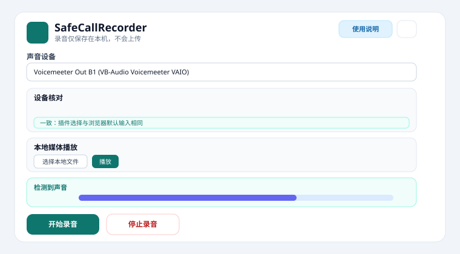
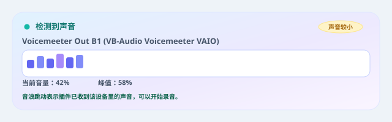
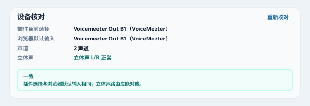
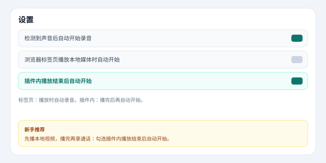
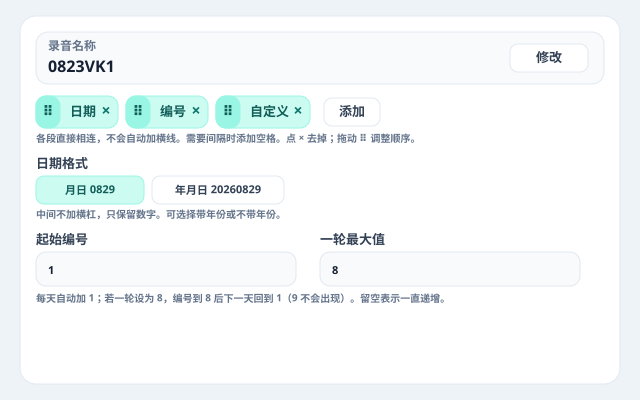

控制面板长什么样？
第一次打开插件时，你会看到下面这几个主要区域。按从上到下的顺序操作即可。

图 1：控制面板主要区域一览
- 录音名称：用日期、自定义文字、编号、空格拼出文件名。
- 声音设备：选择要录制的输入设备（例如 VoiceMeeter Out B1）。
- 设备核对：对比「插件选择」与「浏览器默认输入」是否一致。
- 本地媒体播放：添加 mp4/mp3 等到播放列表，播完后可自动开始录音。
- 音浪监测：确认设备里真的有声音。
- 开始 / 停止录音：正式录音按钮。
- 下载保存路径：设置 MP3、原始录音和备份保存到哪里。
- Google 云端上传（可选）：将 MP3 同步到你 Google Drive 中的文件夹。
- 录音历史：查看、导出、导入、继续录音、上传云端、重新下载以前的录音。
右上角 ？ 使用说明 可随时回到本页；⚙ 设置 可调整自动录音、下载方式等。
3 步开始录音
1
选择声音设备
在下拉框中选择 VoiceMeeter Out B1、CABLE Output、Stereo Mix 或你的麦克风。
若列表为空，点击「授权设备」并允许浏览器访问麦克风。
2
确认音浪有变化
播放一段测试声音。音浪开始跳动，说明插件已经收到该设备里的声音。

3
开始录音
点「修改」拼好录音名称，选择比特率（重要通话推荐 64 kbps），点击「开始录音」。
停止后会自动保存，并按设置下载原始录音、在后台生成 MP3。
设备核对是做什么的？
插件录的是你在下拉框里选的设备；浏览器系统默认麦克风可能是另一个。若两者不一致，容易出现「以为在录 A，实际录的是 B」。

图 2：设备核对显示「一致」
怎么看结果？
- 绿色 · 一致插件选择与浏览器默认输入相同，可以开始录音。
- 黄色名称相近但 ID 不同，建议点「重新核对」或统一浏览器默认麦克风。
- 红色完全不一致，请改插件选择或 Windows / 浏览器默认输入。
播放测试音后，「立体声」一行还会检测左右声道是否都有信号（需 2 声道设备）。
新手建议：每次换设备后点一次「重新核对」，看到绿色再录音。
声音设备应该选哪个？
SafeCallRecorder 录制的是浏览器能访问的录音输入设备。
选择哪个设备，插件就录制哪个设备里的声音。
常见可选设备
- VoiceMeeter Out B1 / B2 / B3 / Output
- CABLE Output
- Stereo Mix（立体声混音）
- 普通麦克风、USB 麦克风、线路输入
录制 VoiceMeeter 声音
浏览器声音→
VoiceMeeter Input→
开启 B1→
VoiceMeeter Out B1→
SafeCallRecorder
录制 VB-CABLE 声音
声音进入 CABLE Input→
插件选择 CABLE Output
录制电脑播放声音
可以尝试选择 Stereo Mix。如果列表中没有，请先在 Windows 声音设置中启用对应录音设备。
VoiceMeeter 怎么设置？
- 打开 VoiceMeeter。
- 确认浏览器或目标软件的声音进入 VoiceMeeter。
- 在对应通道开启 B1、B2 或 B3。
- 打开 SafeCallRecorder，选择对应的 VoiceMeeter Out 设备。
- 在「设备核对」中确认绿色「一致」。
- 播放声音并观察音浪，然后开始录音。
浏览器声音→
VoiceMeeter Input→
开启 B1→
VoiceMeeter Out B1→
本插件
如果选择 VoiceMeeter Out B1 后没有声音，请检查：
- VoiceMeeter 是否正在运行
- 浏览器声音是否进入 VoiceMeeter
- 对应通道的 B1 是否开启、是否静音
- Windows 中 VoiceMeeter Out B1 是否启用
- 插件是否获得声音设备权限
- 是否选对了 B1 / B2 / B3
自动开始录音怎么设置？
点击右上角 ⚙ 设置，找到以下选项（需先开启总开关「检测到声音后自动开始录音」）：

图 4：自动录音相关设置
| 选项 |
何时开始录音 |
| 检测到声音后自动开始 |
总开关；控制面板开着时，音浪首次检测到声音 |
| 浏览器标签页播放本地媒体时自动开始 |
在浏览器新标签里打开 mp4/mp3 并开始播放时立即录音 |
| 插件内播放结束后自动开始 |
在控制面板播放器里播完后再录音（播放中不会提前开始） |
新手推荐组合：开启「检测到声音后自动开始」+「插件内播放结束后自动开始」。先播本地媒体，播完再录通话。
如何录音？
- 拼好录音名称（见下一节）。
- 选择声音设备，并在「设备核对」中确认一致。
- 确认音浪有变化（或先完成本地媒体播放）。
- 选择比特率（见「比特率怎么选择」）。
- 点击开始录音，或等待自动开始。
- 观察当前录音时长和已安全保存时长。
- 结束后点击停止录音。
- 原始录音会按设置立即下载；MP3 在后台分段生成，长录音也可以转。
- 录音仍保留在历史记录中，可再改音质导出，或点 继续录音 在同一条里接着录。
继续录音
在「录音历史」里，只要该条记录已有保存内容，就会显示 继续录音 按钮——无论上次是正常停止，还是断电、闪退、断网导致异常中断。
- 先选好声音设备（可与上次不同，但建议保持一致）。
- 在历史记录中点 继续录音。
- 新内容会追加到同一条历史，计时器显示累计时长（含之前已保存部分）。
- 再次点 停止录音 后，会重新下载 / 生成 MP3（若有多段原始文件会自动打包）。
MP3 正在后台生成时，「继续录音」会暂时不可用；等生成完成后再继续。继续录音会清除该条记录里旧的 MP3 缓存，停止后需重新生成。
停止后怎么下载？
在右上角 ⚙ 设置 里选择「停止录音后的下载方式」：
- 立即下载原始录音，并在后台生成 MP3（推荐）：马上拿到可播放的原始文件，MP3 稍后再自动下载。
- 只下载原始录音：最快，不转 MP3。
- 只等 MP3：等待时间较长，一般不推荐。
当前录音时长：已经录了多久。
已安全保存时长：已经成功写入本地存储的长度。只有这部分，才能在浏览器异常关闭或电脑停电后恢复。
录音名称怎么拼？
名称默认收起，只显示最终结果。点 修改 后再添加、去掉或调整各段顺序。

图：点「修改」后展开的名称编辑器（与插件界面一致）
可以添加的部分
- 日期：默认月日，例如
0823。也可改成年月日，例如 20260823。中间不加横杠。
- 自定义：你输入的文字会原样出现在名称里，可添加多段。
- 编号：今天用你设的起始数字，到了明天自动加 1。也可添加多段。
- 空格：在两段之间插入一个空格。需要几个就加几个。
编号一轮最大值（循环）
展开编号设置后，可填写 一轮最大值。例如设为 8：
- 第 1 天编号为
1，第 2 天为 2……第 8 天为 8
- 第 9 天回到
1，不会出现 9
- 留空表示不限制，编号会一直递增
示例（日期 + 编号，一轮为 8）：08231 → 次日 08232 → … → 第 8 天后次日又回到 08231。
各段怎么连在一起？
日期、自定义、编号之间不会自动加横线，直接相连。需要间隔时，自己添加「空格」。
- 日期 + 自定义 →
0823VK
- 日期 + 空格 + 自定义 →
0823 VK
- 日期 + 空格 + 自定义 + 空格 + 编号 →
0823 VK 3
怎么调整？
- 点名称旁边的 修改。
- 点 添加，选择日期 / 编号 / 自定义 / 空格。
- 点 × 去掉某一段。
- 按住 ⠿ 拖动，调整先后顺序。
- 有日期时，可在「月日」和「年月日」之间切换。
预览里看到的名称，就是停止后下载文件使用的名字（Windows 不允许的符号会在保存文件时去掉）。
应该选择多少 kbps？
控制面板提供 11 档比特率，在文件大小与清晰度之间更细地选择。
16 kbps · 最小文件
- 文件最小，声音可能较模糊
- 适合非重要的超长录音
- 约 7.2 MB/小时
- 不建议重要通话使用
24 kbps · 超省空间
- 比 16 kbps 略清楚，文件仍很小
- 约 10.8 MB/小时
32 kbps · 节省空间
- 普通讲话基本能听清
- 文件较小
- 约 14.4 MB/小时
40 kbps · 紧凑清晰
- 比 32 kbps 更清楚，文件仍紧凑
- 约 18 MB/小时
48 kbps · 日常通话
- 语音与文件大小较平衡
- 适合普通通话
- 约 21.6 MB/小时
56 kbps · 清晰通话
- 比 48 kbps 人声更饱满
- 约 25.2 MB/小时
64 kbps · 重要通话（推荐）
- 人声更清楚
- 适合重要录音和反复听取
- 默认推荐
- 约 28.8 MB/小时
80 kbps · 高清晰
96 kbps · 高质量
- 保留更多声音细节
- 适合复杂背景声音
- 约 43.2 MB/小时
112 kbps · 近立体声
- 接近最高立体声档，文件略小
- 约 50.4 MB/小时
128 kbps · 高质量立体声
- 适合音乐、视频和复杂声音
- 文件较大
- 约 57.6 MB/小时
普通重要通话建议选择 64 kbps；需要更细可在 48–80 kbps 之间试选。
录音保存到哪里？
控制面板中的 下载保存路径 卡片，决定 MP3、原始录音和历史备份保存到哪里。
保存到浏览器「下载」文件夹（推荐，默认）
停止录音后自动下载、以及历史里点「下载 MP3 / 原始录音」，默认都会保存到 Chrome / Edge 的下载文件夹。这是和以前一样的行为，不需要手动选择「下载」目录。
- 在「下载保存路径」卡片中，点 使用下载文件夹（高亮表示当前模式）。
- 子文件夹留空 → 文件直接出现在「下载」根目录。
- 如需分类，可在子文件夹填例如
SafeCallRecorder → 保存到「下载/SafeCallRecorder/」。
停止录音后的自动下载，走的就是浏览器内置下载通道，文件会出现在你熟悉的「下载」文件夹里。
保存到其他位置（如 D 盘）
只有想保存到 D 盘等自定义目录时，才点 选择其他位置…，在弹窗里选一个文件夹（例如 D:\录音）。
Chrome 不允许通过「选择其他位置」直接选「下载」「桌面」等系统文件夹。若出现「无法打开此文件夹，因为它中含有系统文件」，请改回「使用下载文件夹」——那本来就是保存到下载目录的正确方式。
插件内的录音历史
无论文件是否下载成功，录音仍会保留在插件「录音历史」中（IndexedDB），除非你手动删除。可在 Chrome 下载设置中查看浏览器下载文件夹的具体路径。
每次另存为
若浏览器开启了「下载前询问每个文件的保存位置」，下载时仍会弹出另存为窗口（取决于浏览器设置）。
如何上传到 Google Drive？
可选功能。启用后，MP3 可同步到你 Google 账号下的 Drive 文件夹；录音原始数据仍保存在本机。
首次配置
- 在 Google Cloud Console 创建 Chrome 扩展 OAuth 客户端，启用 Drive API（详见项目中的
GOOGLE_DRIVE_SETUP.md）。
- 将客户端 ID 写入
manifest.json 的 oauth2.client_id，重新加载扩展。
- 在控制面板打开 Google 云端上传，勾选启用并 连接 Google 账号。
- 点 选择 Drive 文件夹 浏览并进入目标目录，再点 选择当前文件夹；或点 使用默认文件夹 自动创建
SafeCallRecorder。
上传方式
- 保存本地 + 上传云端：停止录音后，MP3 既保存到本机下载文件夹，也上传到 Drive。
- 仅上传云端：停止后 MP3 只上传 Drive，不自动保存 MP3 到本地下载文件夹（原始录音与历史仍在本机）。
自动与手动上传
- 勾选 停止录音后自动上传 MP3：MP3 在后台生成完成后自动上传。
- 在 录音历史 中，对已有 MP3 的记录点 上传云端 可手动上传。
上传到 Google Drive 需要网络。MP3 正在生成时，「上传云端」需等待生成完成。
如何查看以前的录音？
完成和异常中断的录音都会出现在「录音历史」中。
每条记录可以：播放 MP3、下载当前 MP3、按任意音质重新导出 MP3、下载原始录音、继续录音、上传云端、删除。
继续录音
无论录音是正常结束还是异常中断，只要历史里已有保存内容，都可以点 继续录音，在同一条历史里接着录。之前已写入本地的部分不会丢失，新录的内容会追加在同一条记录中。
- 继续后，界面上的「当前录音」计时会从累计时长继续增加。
- 若多次继续，可能产生多段原始 WebM；下载时会自动打包为 ZIP。
- 停止后 MP3 会按全部段落重新编码生成。
- MP3 后台生成过程中，暂时不能继续录音。
继续录音前请先选好声音设备；继续后点「停止录音」即可正常下载和生成 MP3。
导出 / 导入备份
历史卡片顶部的工具栏提供完整备份功能：
- 导出备份：把所有历史录音（含音频）打包成 zip 下载，便于换电脑或重装插件前保存。
- 导入备份：选择之前导出的 zip，恢复历史记录；导入后可正常播放、导出 MP3。
- 清空历史：永久删除所有历史（需二次确认）。
卸载插件会删除插件内保存的历史。卸载前请先「导出备份」，或逐条下载需要的文件。
按音质重新导出
- 在该条记录里打开「导出音质」，选择 16–128 kbps。
- 旁边会估算导出后的大约体积。
- 点「导出MP3」。原始录音仍保留，不会被覆盖。
选的音质和当初录音相同时，会直接下载已有 MP3；不同时会从原始录音重新编码。
原始录音能显示总时长吗？
可以。下载时的原始 WebM 会写入总时长和定位信息，用播放器打开应能看到进度条和一共多长。以前下过的旧文件可以重新下载，或放到「本地媒体播放」里打开（加载时会补上时长）。
长录音转 MP3 失败怎么办？
现在会按大约 1 分钟一段解码再编码，不再要求整段一次性转换。若仍失败，原始录音还在，可点「导出MP3」重试，或先下载原始文件。
录音历史默认一直保留。只有你手动删除，或点击“清空历史”并完成两次确认后才会永久删除。
删除录音后无法恢复。清空历史需要二次确认。
意外关闭后录音会丢吗？
关闭录音管理页面
正式录音在后台页面中继续运行时，录音应继续。
关闭无关网页
录音继续。
关闭整个浏览器
录音立即停止，但已经安全保存的部分仍然保留。
浏览器崩溃或电脑停电
已经写入本地的部分通常可以在下次启动后恢复。最后尚未写入的约几秒可能丢失。
恢复后的录音会出现在录音历史中。可点 继续录音 接着录，或重新生成 MP3、下载可恢复内容、删除。
插件无法在电脑关机或整个浏览器关闭后继续录制新的声音。
常见问题
为什么声音设备列表是空的？
点击设备区域的授权按钮，允许浏览器访问麦克风或声音设备；确认 Windows 中设备已启用；刷新设备列表；必要时重新加载插件。
设备核对显示红色「不一致」怎么办？
把插件下拉框和 Windows / 浏览器默认麦克风改成同一个设备（例如都选 VoiceMeeter Out B1），然后点「重新核对」直到变绿。
本地媒体播完了为什么没有自动录音？
请在 ⚙ 设置中确认「插件内播放结束后自动开始」已勾选（默认开启）；确认已选择声音设备；确认播放到自然结束（手动点停止不会触发）。
播放本地视频时会不会提前开始录音？
使用插件内播放器时，播放过程中不会因音浪检测提前录音，只有播完后才会自动开始（若已开启对应设置）。
为什么 VoiceMeeter 设备没有显示？
先启动 VoiceMeeter；检查 Windows 录音设备是否启用；允许插件访问声音设备；点击刷新设备。
为什么音浪没有变化？
检查是否选对设备；检查 VoiceMeeter 的 B1/B2/B3；检查是否静音；播放一段声音测试。
为什么音浪很小？
设备音量可能偏低。可以提高 VoiceMeeter 通道音量，但不要过大以免失真。
录音名称中间为什么没有横线？
各段默认直接相连，例如 0823VK。需要空格时，点「修改」→「添加」→「空格」，再拖到两段中间。
编号第二天会变吗？
会。编号使用你设的起始数字，每过一个自然日自动加 1。同一天多次录音，编号保持当天这个数字，除非你再改起始编号。
为什么停止后 MP3 生成失败？
原始录音通常仍然安全保留。可在录音历史中选择任意音质后点击「导出MP3」，或下载原始录音。长录音会分段转换，一般不必整段一次性完成。
原始 WebM 没有进度条、看不到总时长？
请重新加载插件后再点一次「下载原始录音」。新文件会带上总时长。旧文件可重新下载，或用插件内「本地媒体播放」打开。
为什么下载 MP3 没有反应？
确认浏览器允许下载；检查下载权限；点击重新下载；若 MP3 缺失可重新生成。
为什么录音历史占用越来越大？
录音默认一直保留。确认不再需要后，可删除单条或使用清空历史。
继续录音和重新开一条有什么区别？
继续录音：追加到同一条历史，保留原名称、原已保存内容，适合断电后续录、分段会议、录完发现还要补录。开始录音：新建一条独立历史。若只是普通新录音，用「开始录音」即可。
断电或闪退后怎么接着录？
在录音历史中找到已有内容的记录，点 继续录音。请先确认已选择正确的声音设备。正常录完或异常中断的记录都可以继续。
为什么不能选择「下载」文件夹？
保存到「下载」文件夹时，请点「使用下载文件夹」，不要点「选择其他位置」去选下载根目录。Chrome 安全限制不允许把「下载」等系统文件夹当作自定义保存位置；但浏览器内置下载（默认模式）本来就会保存到那里，和以前停止录音时一样。
为什么不能直接输入 D 盘路径？
浏览器不允许根据文字路径直接访问磁盘。保存到 D 盘请点「选择其他位置…」并在弹窗里选中目标文件夹；保存到下载文件夹请用「使用下载文件夹」。
本地媒体播放列表怎么排序？
拖动条目左侧 ⠿ 可调整顺序，或用 ↑↓ 按钮移动。双击某条可从该条开始播放。
Google Drive 连接失败怎么办？
确认已在 manifest.json 填入正确的 OAuth 客户端 ID，且该 ID 绑定了当前扩展 ID。重新 build 并加载 dist 后，再点「连接 Google 账号」。详见 GOOGLE_DRIVE_SETUP.md。
「仅上传云端」还会在本机留录音吗？
会。录音仍保存在插件历史（IndexedDB）中，只是停止后不会自动把 MP3 下载到浏览器下载文件夹。你仍可在历史里播放、重新导出或手动下载。启用后会自动把 MP3 上传到你选的 Drive 文件夹。
无痕模式可以录音吗？
不建议在无痕模式录制重要内容。无痕窗口关闭后，本地录音数据可能被删除。
录音是否会上传？
默认本地保存，不上传
- 录音默认只保存在你的本机浏览器存储中
- 不上传到插件运营者的服务器、不发给第三方
- 不使用 AI 服务
- 不读取聊天内容、密码、Cookie、账号令牌
- 不上传声音设备列表
可选 Google Drive 上传：若你在控制面板中启用并连接 Google 账号，MP3 会上传到你自己 Google Drive 里选择的文件夹。此上传由 Google API 完成，插件不会把文件发到其他服务器。
卸载插件可能删除插件内部保存的历史录音。卸载前请先下载需要保留的文件。